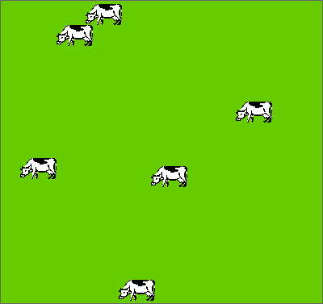
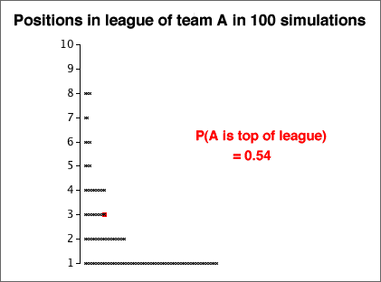
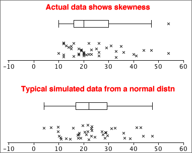
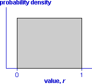
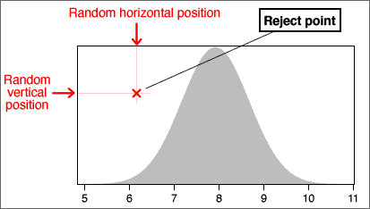
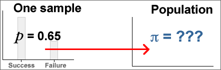
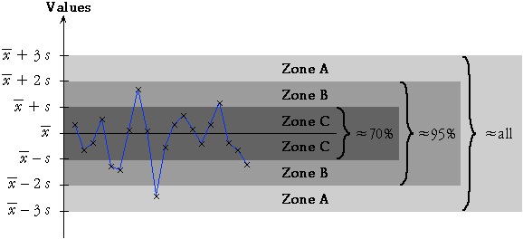

If you don't want to print now,
Population and census
We often want to find information about a particular group of individuals (people, fields, trees, bottles of beer or some other collection of items). This target group is called the population.
Collecting measurements from every item in the population is called a census. A census is rarely feasible, because of the cost and time involved.
Simple random sample
We can usually obtain sufficiently accurate information by only collecting information from a selection of units from the population — a sample. Although a sample gives less accurate information than a census, the savings in cost and time often outweigh this.
The simplest way to select a representative sample is a simple random sample. In it, each unit has the same chance of being selected and some random mechanism is used to determine whether any particular unit is included in the sample.
Sampling from a population of values
It is convenient to define the population and sample to be sets of values (rather than people or other items). This abstraction — a population of values and a corresponding sample of values — can be applied to a wide range of applications.
Variability
Sampling from a population results in sample-to-sample variability in the information that we obtain from the samples.

Sample information about the population
In practice, we only have a single sample and this provides incomplete information about the population.

Effect of sample size
Bigger samples mean more stable and reliable information about the underlying population.
Estimating means and proportions
A random sample is often used to estimate some numerical characteristic of the population, such as...
The difference between an estimate and the population value being estimated is called its sampling error.

Effect of sample size on sampling error
The larger the sample size, the smaller the sampling error. However when the population is large, sampling a small proportion of the population may still give accurate estimates.
Sampling error depends much more strongly on the sample size than on the proportion of the population that is sampled.
For example, a sample of 10 from a population of 10,000 people will estimate the proportion of males almost as accurately as a sample of size 10 from a population of 100.
The cost savings from using a sample instead of a full census can be huge.
Different sampling schemes
Two different ways to collect a random sample of n values from a finite population of size N are common. In both sampling schemes, each population value has the same chance of being in the sample.
Since a SWR may contain the same population value more than once, it covers less of the population than SWOR. SWOR therefore gives more accurate estimates of population characteristics.
Large populations and/or small samples
If the sample size, n, is much smaller than the population size, N, there is little practical difference between SWR and SWOR — there would be little chance of the same individual being picked twice in SWR.
Selecting a sample manually (raffle tickets)
This method is rarely used in research applications.
Selecting a sample with random numbers
To select a random sample without replacement using random numbers,
Random number between 0 and k
The easiest way to generate a random number between 0 and 357 is to use a spreadsheet such as Excel — it has a function designed for this purpose, "=RANDBETWEEN(0, 357)". A computer-generated random value is strictly called a pseudo-random number.
If a computer is not available, a sequence of random digits can be generated:
|
 |
A random number that is equally likely to have any value between 0 and 357 can be found by repeatedly generating 3-digit numbers (between 0 and 999) until a value between 0 and 357 is obtained.
Generalising from data
Most data sets do not arise from randomly sampling individuals from a finite population. However we are still rarely interested in the specific individuals from whom data were collected.
The recorded data are often 'representative' of something more general.
The main aim is to generalise from the data.

Randomness of data
Not only do we usually have little interest in the specific individuals from whom data were collected, but we must also acknowledge that our data would have been different if, by chance, we had selected different individuals or even made our measurements at a different time.
We must acknowledge this sample-to-sample variability when interpreting the data. The data are random.
All graphical and numerical summaries would be different if we repeated data collection.
This randomness in the data must be taken into account when we interpret graphical and numerical summaries. Our conclusions should not be dependent on features that are specific to our particular data but would (probably) be different if the data were collected again.
The more data that we collect, the more accurately our data will reflect population characteristics, but randomness always exists.
Data that are not sampled from a finite population
There is no real finite population underlying most data sets from which the values can be treated as being sampled. The randomness in such data must be explained in a different way.
Sampling from an abstract population
"Random sampling from a population" is also used to explain variability even when there is no real finite population from which the data were sampled.
We imagine an abstract population of all values that might have been obtained if the data collection had been repeated. We can then treat the observed data as a random sample from this abstract population.
Defining such an underlying population therefore not only explains sample-to-sample variability but also gives us a focus for generalising from our specific data.
Distributions
When an abstract population is imagined to underlie a data set, it often contains an infinite number of values. For example, consider the lifetimes of a sample of light bulbs. The population of possible failure times contains all values greater than zero, and this includes an infinite number of values. Moreover, some of these possible values will be more likely than others.
This kind of underlying population is called a distribution.
Positions of cow in a field
Consider the positions of a cow in a field at 6 different times where all locations are equally likely.

The population here contains all possible positions and is therefore infinite.
The idea of a distribution also allows for some possible values to be more likely than others — the cow may be more likely to be in some particular part of the field.
Sampling from a population
Sampling from an underlying population (whether finite or infinite) gives us a mechanism to explain the randomness of data. The underlying population also gives us a focus for generalising from our sample data — the distribution of values in the population is fixed and does not depend on the specific sample data.
Unknown population
Unfortunately the population underlying most data sets is unknown and, in practice, we only have a single sample. However this single sample does throw light on the population distribution.
The diagram below describes a sample from a categorical distribution. Although the underlying population is unknown, the sample proportion of successes, p, is an estimate of the unknown proportions of successes in the population (denoted by π).

Probabilities for a finite population
Random sampling from populations is described using probability. If one value is sampled from a finite population of N distinct values, we say that
Many populations contain values that occur more than once. When sampling from any population,
The probability that a single sampled value is either x, y, ... is the proportion of population values that are either x, y, ... .
For numerical populations, the most useful form of this result is:
Prob( a < X < b ) = propn of values between a and b.
Probability and population proportion
When sampling from any population, whether finite or infinite,
The probability of sampling any value or range of values equals the proportion of these values in the population.
Probability and long-term proportion
An alternative but equivalent way to think about probability arises when we can imagine repeatedly selecting more and more values from the population (e.g. repeating an experiment). The probability of any value or range of values is the limiting proportion of these values as the sample size increases.

The equivalence of the two definitions is called the law of large numbers.
Describing categorical and discrete populations
Categorical and discrete samples can be described graphically with bar charts of the proportions for the distinct values. Since probabilities are defined to be population proportions, the underlying population can also be described by a bar chart.

Bar charts and the law of large numbers
The law of large numbers states that sample proportions approach the underlying probabilities as the sample size increases. This means that a sample bar chart will be close in shape to the unknown population bar chart if the sample size is big enough.
Histograms and probability density functions
The situation is a little more complicated for continuous numerical populations and samples. A standard histogram could be used to describe the population in the same way that it might be used for a sample:

However with an infinite population, we can narrow the histogram classes beyond what would be reasonable for a finite sample. Indeed, class widths can be reduced indefinitely, resulting in a smooth histogram called a probability density function. This is often abbreviated to a pdf.

Probability density functions are still essentially histograms and share all properties of histograms.
Shape of a probability density function
A probability density function is usually a fairly smooth curve, though a single sample histogram provides limited information about its likely shape.

Normal distributions
One flexible group of continuous probability density functions is the family of normal distributions. Normal distributions:
Changing the parameters µ and σ changes where the distribution is centred and its spread, but its shape remains otherwise the same.
The parameters are often estimated from a sample. Details will be given later, but the resulting normal pdf will be close in shape to a histogram of the sample data.

Probabilities from a histogram
In the histogram of any finite sample or population, the area above any class is the proportion of values in the class.

Probabilities from a probability density function
Since a probability density function (pdf) is a type of histogram, it satisfies the same property.
The probability that a sampled value is within two values, P(a < X < b), equals the area under the pdf.
This is the key to interpreting pdfs.

For any events, A and B, the following properties always hold.
Probabilities are always between 0 and 1
0 ≤ P(A) ≤ 1
Meaning of probabilities 0 and 1
If the event A cannot happen then P(A) = 0
If the event A is certain to happen then P(A) = 1
Probability that an event does not happen
P(A does not happen) = 1 - P(A)
Addition law
When two events cannot happen together, they are said to be mutually exclusive. If A and B are mutually exclusive,
P(A or B) = P(A) + P(B)
If the events A and B are not mutually exclusive,
P(A or B) < P(A) + P(B)
Independence
When sampling with replacement from a finite population, the choice of each value does not depend on the values previously selected. The successive values are then called independent. This also holds when sampling from an infinite population (distribution).
On the other hand, if sampling without replacement from a finite population, successive sample values are not independent since the second value selected cannot be the same as the first value, so knowing the first value affects the probabilities when the second value is selected.
Probability describes situations where a random sample is selected from a population. It is also used to model a variety of other situations involving randomness.
Tennis match
A simple model for a tennis match between two players, A and B, assumes that:
A more complex model might introduce more parameters to relax the assumption of independence.
Simulation
For any values of π1 and π2, we could randomly generate the results of successive points until a match was complete.
This generates an instance of the model and is called a simulation.
Repetitions of a simulation
Repeating a simulation and observing the variability in the results can give insight into the randomness of the system's behaviour.
Model for sport league
Consider a sports league of 10 teams in which each team plays each other twice and:
| Points from a match = | 3 if team wins 1 if team draws 0 if team loses |
We will model the league with a simple model for the results of individual matches. In it, team A has over twice the probability of winning than losing, but all other teams are equally matched.
Simulation
This model can be used to randomly generate the results of all 90 matches in the league.

Repeating the simulation 100 times gives the following results:

Despite team A being so much better than the other teams, the simulation shows that it has little more than 50% chance of ending the season on top of the league.
English Premier Soccer League in 2008/9
The table below shows the points gained by all teams in the English Premier Soccer League at the end of the 2008/9 season.
| Team | Pts | |
| 1 | Manchester United | 90 |
| 2 | Liverpool | 86 |
| 3 | Chelsea | 83 |
| 4 | Arsenal | 72 |
| 5 | Everton | 63 |
| 6 | Aston Villa | 62 |
| 7 | Fulham | 53 |
| 8 | Tottenham Hotspur | 51 |
| 9 | West Ham United | 51 |
| 10 | Manchester City | 50 |
| 11 | Wigan Athletic | 45 |
| 12 | Stoke City | 45 |
| 13 | Bolton Wanderers | 41 |
| 14 | Portsmouth | 41 |
| 15 | Blackburn Rovers | 41 |
| 16 | Sunderland | 36 |
| 17 | Hull City | 35 |
| 18 | Newcastle United | 34 |
| 19 | Middlesburgh | 32 |
| 20 | West Bromwich Albion | 32 |
Evidence of skill?
A quarter of the matches in 2008/9 were draws, so we will conduct a simulation with a model in which all teams are equally matched and:
From each simulated league, we will summarise the spread of points at the end of the season using both their range and their standard deviation. After 100 simulated leagues, these measures of spread are shown below.

The actual spread of points in the 2008/9 league was much higher than those that appeared in the simulations with equally matched teams, indicating that there was indeed a difference between the skill levels of the best and worst teams in the league.
Interpreting a graphical summary of a sample
Simulations can also help us to assess features such as outliers, clusters or skewness in a data set by examining how often they appear in random samples from a population without such features.
In particular, we can examine variability in samples from a normal distribution that closely matches the shape of the data set.

The amount of skewness in the the actual data (top) is rarely seen in simulated normal samples (such as that shown above). This informally suggests that the the population underlying the data really is skew and not symmetric.
Random values
Simulations are conducted by generating random values from the probability distributions in the model.
A computer program should normally be used to generate random values. The program Excel contains functions that can be used.
Generating categorical and numerical values is usually based on random values that are equally likely to take any value between 0 and 1. Such a value is said to come from a rectangular (or uniform) distribution between 0 and 1 and has the probability density function shown below.

A value can be generated from a rectangular distribution with the Excel function "=RAND()" or, by hand, by generating a sequence of random digits (e.g. by rolling a 10-sided die).
Generating a categorical value
A random category can be generated from a rectangularly distributed random value, r .
If P(success) is denoted by the symbol π, then a success will be generated if r is less than π. This can be generalised as illustrated in the diagram below:

Generating a continuous numerical value
There are several algorithm that can efficiently generate random values from continuous distributions. For example, the Excel function "=NORMSINV(RAND())" generates a random value from a normal distribution with µ = 0 and σ = 1.
The following method is simple to explain but is not recommended for general use.
Consider the diagram below which encloses the distribution's probability density function with a rectangle.

A random position within the rectangle is generated with a random rectangular horizontal and vertical positions. If it lies within the density function, the x-coordinate is the generated value. Otherwise more positions within the rectangle are generated until a point is found within the density function.


Sampling mechanism
The mechanism of sampling from a population explains randomness in data.

In practice, we must use a single sample to find information about the population.

Parameters and statistics
We usually focus attention on a small number of numerical characteristics.

Variability of sample statistics
The variability in random samples also implies sample-to-sample variability in sample statistics.

Distribution of the sample mean
The mean of a random sample of n values is a random quantity. Its distribution is centred on the population mean but its spread is lower then that of the population distribution.
Centre and spread of the sample mean's distribution
We can be more precise. If the population has mean µ and standard deviation σ, then the mean of a sample of n values,  ,
has a distribution with mean and standard deviation:
,
has a distribution with mean and standard deviation:
| = μ |
| = |
Shape of the mean's distribution
Whatever the shape of the population distribution,
| = μ | = |
However skewness in the population distribution leads to some skewness in the distribution of the mean.
Samples from normal populations
When the population distribution is normal, the sample mean also has a normal distribution.
| ~ normal (μ , | ) |

Means from non-normal populations
Irrespective of the shape of the population distribution,
| = μ | = |
If the population is not a normal distribution, the sample mean does not have a normal distribution. However the Central Limit Theorem states that...
For most non-normal population distributions, the distribution of the sample mean becomes close to normal when the sample size increases.

Need for multiple values to assess variability
We usually need to make two or more measurements of a variable to get any information about its variability. A single value contains no information about the quantity's variability.
Achieving the impossible?
Fortunately, we do not need multiple sample means to assess the variability of a sample mean. Its distribution can be estimated from a single sample using
| = μ |
| = |
The distribution of the mean can be approximated with a normal distribution with this mean and standard deviation, if we replace µ
and σ with  and s.
and s.
Independent random samples
The formula for the standard deviation of a sample mean,
| = |
is only accurate if the sample values are independent.
Dependent random samples
When sample values are correlated with each other, they are said to be dependent and the formula

can badly underestimate the variability (and hence accuracy) of the sample mean of dependent random samples.
Always check that a random sample is independently selected from the whole population before using the formula for the standard deviation of the sample mean.
Sampling with replacement from finite populations
When a random sample is selected with replacement from a finite population, the sample values are independent and the standard deviation of the sample mean is again
| = |
Note however that the population standard deviation, σ, uses divisor N, the number of values in the population, rather than (N - 1).

Sampling without replacement from finite populations
When a sample is selected without replacement, successive values are no longer independent — if a large value is selected, it cannot be selected again, so the next value will tend to be lower.
For sampling without replacement, a different formula should be used for the standard deviation of the sample mean:

The quantity (N - n) / (N - 1) is called the finite population correction factor. It can usually be ignored if only a small fraction of the population is sampled (say under 5%).
Normal distribution parameters
The family of normal distributions consists of symmetric bell-shaped distributions that are defined by two parameters, µ and σ, the distribution's mean and standard deviation.
Normal distributions as models for data
The sample data rarely gives enough information for us to be sure that the underlying population is normal, but a normal model is often used unless there is obvious non-normality in the data.
Even if the sample data are obviously skew, a normal distribution may be a reasonable model for a nonlinear transformation of the values (e.g. a log transformation).
Distribution of summary statistics
A more important reason for the importance of the normal distribution in statistics is that...
Many summary statistics have normal distributions (at least approximately).
The Central Limit Theorem shows that the mean of a random sample has a distribution that is close to normal when the sample size is moderate or large, irrespective of the shape of the distribution of the individual values. The following are also approximately normal when the sample size is moderate or large...
Effect of normal parameters on distribution
Distributions from the normal family have different locations and spreads, but other aspects of their shape are the same. Indeed, if the scales on the horizontal and vertical axes are suitably chosen, ...

A common diagram for all normal distributions
All normal distributions have basically the same shape.
This should allow you to sketch a normal distribution, given any values of µ and σ.

Some probabilities for normal distributions

A more precise version of the middle probability is
70-95-100 rule of thumb and the normal distribution
These probabilities are the basis of the 70-95-100 rule of thumb for 'bell-shaped' data sets.
Standard deviations from the mean
Any x-value can be expressed as a number of standard deviations from the mean — its z-score.

or equivalently,
x = μ + z × σ
Probabilities and z-scores
Any probability (area) relating to a normally distributed random variable, X, can be expressed in terms of z-scores:

Note in particular that:
Distribution of z-scores
Calculating a z-score from a value, x, is called standardising it.
| standardised value, |
|---|
If X has a normal distribution, then Z has a standard normal distribution with mean µ = 0 and standard deviation σ = 1.
Probabilities for the standard normal distribution
After translating a probability about X into one about a z-score, it is easier to evaluate it.

Areas under the standard normal curve can be evaluated in Excel and most statistical programs. Statistical tables can also be used (see later).
Evaluating other probabilities
Other probabilities about normal distributions can be found using the following properties:
Probability of higher value

Probability of value between two others

In both cases, the conversion can be done either before or after translating the required probability from x-values to z-scores.
Standard normal probabilities without a computer
Probabilities about z-scores can be found without a computer. Most introductory statistics textbooks contain printed tables with left-tail probabilities for the standard normal distribution.

These tables can be used after the required probability has been translated into a problem relating to the standard normal distribution.
Finding an x-value from a probability
Finding quantiles
To find the x-value for which there is probability p of a normal distribution being lower,
The first step of this process can be done with Excel (or other statistical software) or statistical tables can be used. For example, the diagram below shows how to find the z-score such that there is probability 0.9 of being less.

Translating from a z-score to the corresponding x-value is done with the formula,
x = μ + z σ
Do the data come from a normal distribution?
A histogram may indicate that a sample is unlikely to come from a normal distribution, but a normal probability plot can indicate more subtle departures from a normal distribution.
If the data set is from a normal distribution, the data should be spaced out in a similar way to the normal quantiles, so the crosses in the normal probability plot should lie close to a straight line.

How much curvature is needed to suggest non-normality?
This is a difficult question to answer and we will not address it here.
A sample proportion has a distribution
If a categorical data set is modelled as a random sample from a categorical population, the sample proportions must be treated as random quantities — they vary from sample to sample.

The population proportion in a category is called its probability, and is often denoted by π. The corresponding sample proportion is usually denoted by p.
| Sample Statistic | Population Parameter | |
|---|---|---|
| Mean | µ | |
| Standard deviation | s | σ |
| Proportion/probability | p | π |
In practice, we only have a single sample and must use it to get information about the underlying population.

Properties of a sample proportion
A sample proportion from a random sample of size n has a distribution that ...
Count and proportion of successes
Although the sample proportion in a category, p , is a good summary statistic, the raw count of sample values in the category, x = np, contains equivalent information and is often easier to use. They have distributions with the same shape (other than the scaling constant n).

General notation
In a categorical population, we choose one category of interest and call it success; all other categories are collectively called failures. The population proportion of successes is denoted by π.
When a random sample of n values is selected, we denote the number of successes by x and the proportion of successes by p = x/n.
Distribution of a sample proportion
The number of successes, x , has a 'standard' discrete distribution called a binomial distribution which has two parameters, n and π.
In practical applications, n is a known constant, but π may be unknown. The sample proportion, p , has a distribution with the same shape, but is scaled by n .

Assumptions underlying the binomial distribution
Evaluating binomial probabilities
They may be obtained using ...
A range of counts
Finding the probability that the number of successes is within an interval involves adding the binomial probabilities for all integer values in the interval.
Think carefully about the wording of the interval — does it include the values at the end? Adding or subtracting 1/2 to the endpoints of the interval makes it clearer. (This is also particularly useful when using the normal approximations that are described in the following pages.)
| In words... | In terms of X | Using 1/2 |
|---|---|---|
| More than 5 | X > 5 | X > 5.5 |
| Greater than or equal to 5 | X ≥ 5 | X > 4.5 |
| No more than 5 | X ≤ 5 | X < 5.5 |
| At least 5 | X ≥ 5 | X > 4.5 |
| Fewer than 5 | X < 5 | X < 4.5 |
| 5 or fewer | X ≤ 5 | X < 5.5 |
The following example illustrates the use of 1/2 in this way.

Mean and standard deviation of x and p
The mean and standard deviation are given below for the proportion of successes p , and number of successes, x = np

The fact that both x and p are approximately normally distributed in large samples is justified below.
Proportions and means
If we assign a code of '1' to the successes and '0' to the failures in the random sample, then the resulting values are called an indicator variable. Its mean is identical to the proportion of successes.

Since the proportion of successes in a sample is a kind of mean, its distribution is close to a normal distribution if the sample size is large enough.

Use of the normal approximation to the binomial distribution
To avoid adding large numbers of binomial probabilities, the normal approximation can be used to find the probability that a binomial variable is within a certain range when the sample size, n , is large.
A common rule-of-thumb for when this kind of normal approximation can be used is:
nπ > 5 and n(1-π) > 5
An example is given below:
Note the translation of the range of values into one involving 1/2. It is called a continuity correction in this context.
A simple random sample of individuals from a population is the easiest sampling scheme to understand, but other sampling schemes may give more accurate estimates of population characteristics.
Grouping of individuals
If the individuals in the population can be split into different groups (called strata in sampling terminology), it is often better to take a simple random sample within each separate group than to sample randomly from the whole population. This is called a stratified random sample.
The proportion sampled from the different strata are usually fixed to be the same as the proportions of individuals in the strata in the population. In a simple random sample, the proportions sampled from the strata might not match the population proportions, so a stratified random sample should be more 'representative'.

Sampling frame
Before taking a simple random sample or stratified random sample, a complete list of all individuals in the target population must be available. This is called a sampling frame.
Cluster sampling
If a complete sampling frame is not available, it may be possible to group the target individuals into reasonably small groups, called clusters, for which a complete list is available.
Clusters are similar to the strata that are used for stratified sampling, but are usually much smaller. For example, a cluster might contain all of the houses in a street, or all of the individuals in a household. It is not necessary to know beforehand how many individuals are in each of the clusters.
For cluster sampling, a simple random sample of clusters is selected, with all individuals in these clusters selected.
Cost advantages
Even when a complete sampling frame is available, cluster sampling might be used to reduce the cost of sampling (or to increase the sample size for the same cost) since it is often cheaper to record information from individuals in the same cluster than from different parts of the sampling frame.
Accuracy of cluster sampling
The disadvantage of cluster sampling is that estimates are usually less accurate than the corresponding estimates from a simple random sample of the same size.
However the cost advantages would permit a larger sample size, so cluster sampling may give the best estimates for a fixed cost.
Sampling from large populations
Two-stage sampling is a sampling scheme that is related to cluster sampling, but is of most use for large populations when the individuals are very widely separated in some sense. For example, many polls are conducted to obtain national information about voting intentions or consumer purchases, and there is a high cost associated with travelling between different regions.
In two-stage sampling, the population is separated into groups of adjacent individuals called primary sampling units. These primary sampling units are typically large — for example a country might be split into 20 or more regions. A small number of these are selected according to some sampling scheme, then individuals are sub-sampled within each selected primary unit.
Costs are reduced by limiting sampling to a small number of primary units. For example, if individuals are only sampled from within say 5 regions, travelling and accommodation costs will be considerably reduced.
Estimation
The aim of sampling is usually to estimate one or more population values (parameters) from a sample. Because we do not have complete information about the population, the estimate is unlikely to be exactly same as the value that we are estimating, so we call the difference the error in the estimate. There are different kinds of error.
Sampling error
We have presented four different ways to sample from a population
Each of these involves randomness in the sample-selection process. The error caused by randomness in the sampling process is called sampling error.
Non-sampling error
When sampling from some types of population — especially human populations — problems often arise when conducting one of the above sampling schemes. For example, some sampled people are likely to refuse to participate in your study.
Such difficulties also result in errors and these are called non-sampling errors. Non-sampling errors can be much higher than sampling errors and are much more serious.
It is therefore important to design a survey to minimise the risk of non-sampling errors.
'Missing' responses
The first two types of non-sampling error are caused by failure to obtain information from some members of the target population.
Coverage error
Coverage error occurs when the sample is not selected from the target population, but from only part of the target population. As a result, the estimates that are obtained do not describe the whole target population — only a subgroup of it.
Non-response error
In many surveys, some selected individuals do not respond. This may be caused by ...
If non-response is related to the questions being asked, estimates from the survey are likely to be biased.
'Inaccurate' responses
The next two types of non-sampling error are caused by inaccurate information being obtained from the sampled individuals.
Instrument error
Instrument error usually results from poorly designed questions. Different wording of questions can lead to different answers being given by a respondent. The wording of the question may be such as to elicit some particular response (a leading question) or it may simply be carelessly worded so that it is misinterpreted by some respondents.
Interviewer error
Interviewer error occurs when some characteristic of the interviewer, such as age or sex, affects the way in which respondents answer questions.
There are various different ways to collect information from human populations. Each method has its advantages and disadvantages.
Telephone
Mailed questionnaire
Interviewer
Houses are rarely selected at random. Often streets are randomly selected and every 5th or 10th house in the street is approached. This is called a systematic sample.
Street corner
Some surveys are conducted by approaching people in busy shopping centres or similar public places.
To reduce coverage errors, a quota sample is often used. Each interviewer is told to interview fixed numbers of old, young, male, female, etc. respondents to match the corresponding proportion in the target population.
Self-selected
Phone-in or mail-in surveys are often conducted by radio stations and magazines. The respondents are usually so unrepresentative that the results are meaningless. These types of survey should be avoided.
Statistics for complex problems
In practice, problems are rarely well-defined and there may be various different ways to collect data to throw light on them.
Collection and analysis of data to help attack the problem usually suggest further questions for which further data are required. Several cycles of data collection and analysis are usually needed, with considerable input from an expert in the problem area between each cycle of the process.
Continuous quality improvement
In business and industry, statistics is an important part of the long-term monitoring of performance. We may simply want to ensure that systems continue to perform at their current levels, or the aim may be to improve aspects of the system. The latter is often called continuous quality improvement or total quality management.
Problems in a process are usually detected by collecting and analysing data about the performance of the system. This section describes the use of control charts as a way to monitor processes.
Inherent variability
A certain level of variability in any process is unavoidable. We say that this 'acceptable' level of variability is a result of common causes (or random causes) and if it is the only source of variability, the process is said to be in control.
Systematic changes
Our aim is to detect changes to the output that are not the result of common causes. Such systematic changes are said to be the result of special causes (or assignable causes) and could result in...
Systematic changes usually indicate problems with the quality of the output and the process is said to be out of control.
Run chart
A control chart plots measurements describing the process in time order — a type of time series plot. We hope to use it to quickly detect problems and adjust the process to maintain quality. If a single value is recorded at each time, the control chart is called a run chart. (Other control charts plot sample means and ranges.)
The challenge is to detect systematic changes in the control chart (due to special causes) over the background level of variability (due to common causes).
In the example below, the manager has determined that an output measurement should 'almost always' be between 2,000 and 2,080 with variability in this range considered to be due to common causes. Two out of the last four values were above the upper limit, suggesting a problem with the process that should be investigated and fixed.

Control limits
The simplest rule suggesting a special cause is any value that is outside two control limits. Values outside the control limits suggest that the process is out of control — they trigger an examination of the process for a special cause.
Control limits are usually based on the mean and standard deviation of the process when it is in control. The 70-95-100 rule of thumb states that in many distributions,

By setting the upper and lower control limits to be 3 standard deviations on either side of the process mean, we avoid many 'false alarms' when the process is in control. This is important since values outside the control limits would trigger an examination of the production process — possibly a costly exercise.
Shape of the distribution
The 70-95-100 rule of thumb is most accurate for reasonably symmetric, bell-shaped distributions, though values more than 3 standard deviations from the mean are rare for all distributions. However these control limits should be avoided for very skew distributions — consider transforming the data before producing a run chart.
Additional triggers for an out-of-control process
The most commonly used indication of a process being out-of-control is a value outside the upper and lower control limits (more than three standard deviations away from the centre line). This is sensitive to changes to the process mean or increases in the process variability.
Additional triggers have been proposed that are also sensitive to systematic changes in a process. These are all based on successive values within 1, 2 or 3 standard deviations from the centre (Zones C, B or A).

False alarms
Although the individual patterns that we use as triggers occur rarely in a process that is in control, they do occur occasionally. Indeed, the proportion of values from a stable process that triggers each of the criteria is typically about 1 in 200, so if all five criteria are used, a reasonable number of false alarms will occur.
Clearly a single exceptional value is not conclusive proof that the process is out of control. However it is appropriate to examine carefully the operation of the process to look for an assignable cause for this value (and adjust the process if such a cause is discovered). And a series of such values does indicate that the process is out of control.
Obtaining control limits
It is important to evaluate control limits from the mean and standard deviation of values from the process when it is in control. The process should be monitored carefully (to avoid special causes) for this training period.

Samples instead of individual values
Although control charts for individual values are sometimes used, it is more common to examine samples from a process at regular intervals rather than individual values.
Control chart for means
This avoids the problem that the 70-95-100 rule of thumb is poor for skew distributions — sample means have distributions that are closer to normal than individual values. If the sample size is n,
 =
= 
The control limits for a control chart of sample means are therefore...
 ± 3
± 3
where  and s are estimates of the mean and standard deviation of individual values when the
process is in control. These control limits should be distinguished carefully
from the corresponding control limits for individual values,
and s are estimates of the mean and standard deviation of individual values when the
process is in control. These control limits should be distinguished carefully
from the corresponding control limits for individual values,
 ± 3s
± 3s
Since the control limits used in a control chart for means are closer to  than those in a control chart for individual values, the chart is more sensitive
to changes in the process mean over time.
than those in a control chart for individual values, the chart is more sensitive
to changes in the process mean over time.
Training data
In the example below, the control limits use the mean,  , and standard deviation, s, from a training period of five samples to set control limits for individual values.
, and standard deviation, s, from a training period of five samples to set control limits for individual values.

where

Detecting changes to process variability
A control chart of sample means is used to detect shifts in the 'centre' of a process. In a similar way, a control chart to assess whether the process variability has changed can be based on the spread of successive samples.
The most commonly used control chart for process variability is based on the sample ranges.

By separately targetting the process centre and variability with control charts for means and ranges, we can get better indications of any changes in the performance of the process, and we can therefore intervene more promptly to correct potential drops in quality.
Finding the cause of problems
Control charts (and other collected data) may indicate problems with a system. However, after detection of a problem, its cause must be identified in order to rectify it. This is usually a non-trivial exercise and the following tools often help.
Brainstorming
In a brainstorming session, all team members contribute short phrases that are written on either a large sheet of paper or individual scraps of paper (post-it notes are good). The points should be written down without discussion or editing, and all team members should be encouraged to contribute.
Once these ideas have been written down, they must be structured or grouped in some way.
Cause-and-effect diagrams
After possible causes for a problem have been contributed in a brainstorming session, they can be structured in a cause-and-effect diagram (also called a fishbone diagram).

This structuring of possible causes helps to focus attention on the most likely causes and on ones that may be altered in the 'Do' step in the Plan-Do-Check-Act cycle.